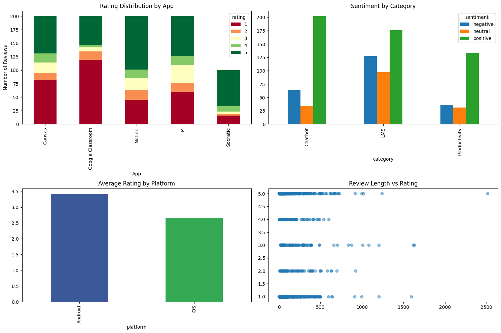
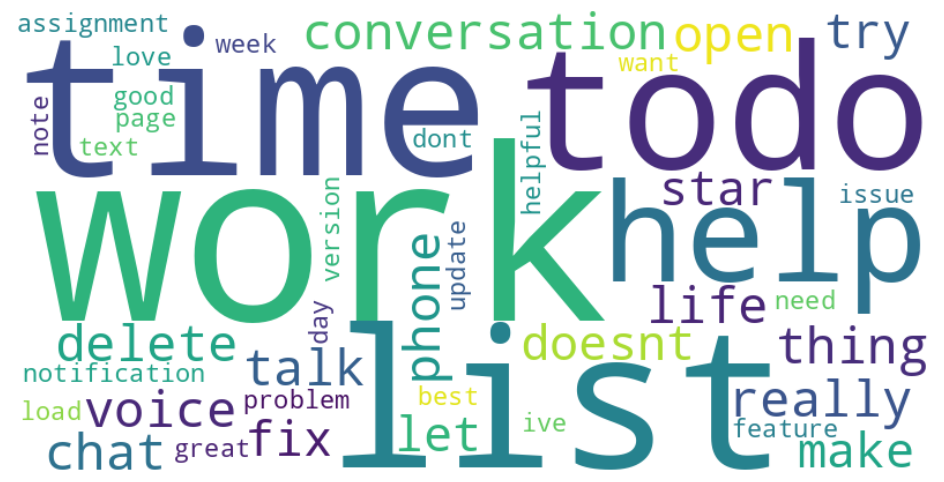

Canvas API Chatbot
A Desktop Application to Streamline Canvas LMS Navigation
Team: Phillip Payan & Aidden Torres | Duration: Fall 2025 Semester | Course: CSCI 4250 (Human Centered Computing)
Motivation
Why we built this
Students spend significant time navigating Canvas's multi-level menu system to access basic information like upcoming assignments, current grades, and course announcements. A typical query requires clicking through 3-5 different pages and waiting for each to load. This inefficiency becomes particularly problematic when students need to quickly check information between classes or before deadlines.
Problem Statement: Canvas LMS requires multiple navigation steps for simple information queries, creating friction that wastes student time and increases the likelihood of missing important updates.
Target Users: College students who need quick, frequent access to Canvas information without the overhead of web browser navigation.
Project Goals:
- Reduce Canvas navigation time by 70% through conversational queries
- Enable instant access to assignments, grades, and announcements via natural language
- Implement secure local storage of API tokens with encryption
- Provide desktop notifications for upcoming deadlines and new announcements
Online Study
Competitive Analysis & User Research
To understand user needs and identify pain points with existing solutions, we conducted a comprehensive competitive analysis of similar applications. We developed a Python-based web scraper to collect and analyze user reviews from both the Apple App Store and Google Play Store for five competing applications: Canvas Student, Google Classroom, Socratic by Google, Pi AI, and Notion. This automated approach allowed us to gather authentic user feedback at scale and identify common frustrations and desired features.
Research Methods:
- Automated Review Scraping: Developed Python scraper using iTunes RSS feeds and Google Play API to collect up to 100 reviews per app per platform
- Sentiment Analysis: Implemented VADER sentiment analysis to classify reviews as positive, negative, or neutral
- Topic Modeling: Applied Latent Dirichlet Allocation (LDA) to identify recurring themes and topics across reviews
- Pain Point Analysis: Extracted and categorized user complaints from low-rated reviews (1-2 stars)
- Competitive Analysis: Compared features, ratings, and user satisfaction across LMS apps, chatbot apps, and productivity tools
Key Findings:
- Navigation Complexity: 30.8% of negative reviews mentioned difficulty finding information within Canvas and similar LMS platforms
- Grade Access Frustration: 28% of reviews mentioned "confusing" or "hard to find" grade information
- Assignment Tracking Issues: 43% of users expressed frustration with keeping track of deadlines across multiple courses
- Positive Chatbot Reception: AI chatbot apps received 64.8% average positive sentiment scores
Research visualizations:

Rating distribution, sentiment analysis, and platform comparison

Common themes from LDA topic modeling
Design Implications:
- Conversational natural language interface to eliminate menu navigation
- Instant grade and assignment access through simple queries
- Proactive notifications and reminders for upcoming deadlines
- Cross-platform desktop application for better performance than web-based solutions
- Secure local API token storage to address authentication concerns
Prototyping Phase
Design & Iteration
We developed two low-fidelity prototypes using Figma to explore different approaches to Canvas information access.
Prototype 1: Chat-Based Interface
A minimalist design centered entirely around conversational interaction. Users type natural language queries to access all Canvas information without any visual dashboard elements.
Prototype 1: Chat-Based Interface
Prototype 2: Dashboard + Chat Hybrid
A comprehensive interface combining visual information display with optional chatbot assistance. The dashboard shows key information at a glance while providing a sidebar chatbot for natural language queries.
Prototype 2: Dashboard + Chat Hybrid
User Study 1 Results
Low-Fidelity Prototype Evaluation
Study Overview: 9 college students, in-person one-on-one sessions with think-aloud protocol
Key Findings:
- Participants were divided between both designs - some preferred chat simplicity, others preferred visual dashboard scanning
- Dashboard design reduced cognitive burden of remembering what questions to ask
- Reminder and assignment features were universally appreciated
- Multiple participants stated that duplicating full Canvas features was unnecessary
- Users requested: calendar view, syllabus viewer, grade calculator, announcements display
Design Decision: Dashboard + Chat Hybrid (Prototype 2)
Why: Supports fast visual access without requiring users to formulate queries, reduces mental burden, still allows conversational assistance when needed. Most participants felt it was more organized and intuitive.
User Study 2 Results
Functional Prototype Evaluation
Study Overview: 6 college students testing the functional Python application with live Canvas data
Functional Prototype During User Study 2
What Went Right:
- Dashboard organization praised as "organized," "clean," and "fast to scan"
- Users found the system faster than Canvas, especially for checking due dates
- Chatbot handled shorthand and misspellings effectively
- Most users completed all tasks without needing assistance
- Reminder creation worked as expected
Issues Identified:
- Reminder deletion labels were unclear
- Course navigation required too much scrolling - users wanted a "View All Courses" page
- Chatbot's open-ended phrasing prompted unrealistic queries outside its scope
- Users requested messaging panel and course filtering options
Would They Use It Regularly?
100% of participants said YES, with conditions: reliability must remain consistent, additional messaging features would increase value, clearer feature descriptions needed.
Final Implementation
The Working Application
Full Application Demo
The Canvas LMS Desktop Application is a fully functional Python-based tool built with tkinter for the GUI and integrated with the Canvas API. The application provides students with a streamlined interface for managing coursework.
Core Features:
- Dashboard: Upcoming assignments, current grades, active reminders, last sync timestamp
- Assignment Management: View all unsubmitted assignments organized by course with due date tracking
- Grade Tracking: Current grades with expandable detailed breakdowns per course
- Reminder System: Calendar-based date selection with desktop notifications (macOS)
- Chatbot: Natural language queries like "What's due this week?" or "What's my grade in Biology?"
Technology Stack: Python 3.11+, tkinter, Canvas REST API, tkcalendar, requests, terminal-notifier (macOS notifications)
Key Architecture:
- Gui_app.py - Main GUI application
- Canvas_api.py - Canvas API wrapper & authentication
- chatbot.py - Natural language processing engine
- utils.py - Notification handler with threading
Privacy & Security: All data stored locally on user's machine. Users provide their own Canvas API tokens for direct connection. No cloud storage or external data transmission.
Reflections & Learnings
What we learned from this project
Key Successes:
- User Research Drove Decisions: Starting with competitive analysis of 500+ reviews prevented building unwanted features
- Iterative Testing Validated Approach: Two user studies at different fidelity levels allowed early course-correction
- Simplicity Over Features: Students wanted fast shortcuts to common tasks, not a Canvas replacement
- Natural Language Added Value: Chatbot's ability to handle shorthand like "what's due tmrw" received consistent praise
Challenges Faced:
- Scope vs. Expectations: Balancing what users wanted (messaging, announcements) with semester timeline constraints
- API Token Management: Security requirement added friction to first-time setup
- Cross-Platform Notifications: Terminal-notifier works on macOS but not Windows/Linux
- Chatbot Expectations: Open-ended interface led users to expect broader functionality than Canvas-specific queries
HCI Principles Applied:
- User-Centered Design - every decision from user feedback, not assumptions
- Iterative Development - multiple prototype → test → refine cycles
- Cognitive Load Reduction - dashboard displays information proactively
- Recognition Over Recall - visual elements reduced need to remember queries
Impact: 100% adoption intent from User Study 2, all participants agreed system felt faster than Canvas, validated our user-centered approach.
The Team
Phillip Payan - UX Researcher & Lead Developer
Aidden Torres - Developer
Fall 2025 | CSCI 4250 - Human Centered Computing
New Mexico State University